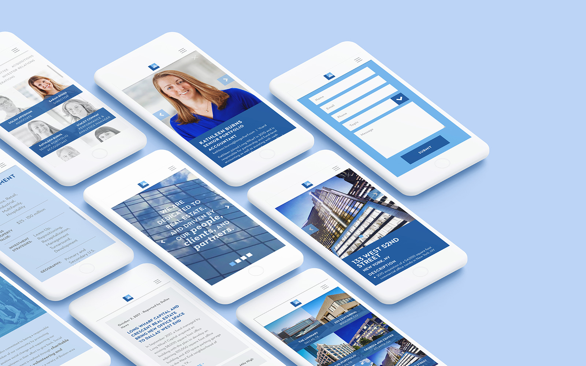

Snapshot
I'm a full-stack developer focused on front-end mobile design; Also a huge advocate of Design Thinking and User Experience to solve problems proactively.
Recent Projects
Here are some websites I've worked on.
-
- Bold Maker Studio

- Product design company in Haverhill, MA. Before migrating site from WooCommerce to Shopify, we rebranded and rebuilt from the bottom up.
- Roles: Content Strategy, Photographer, Developer
- Tools: Wireframing, HTML, CSS, Photoshop, Lightroom
- Visit Site
-
- Long Wharf Capital
- 
- Real esate investment firm in Boston MA. Custom theme development with editable staff and investment portfolio.
- Roles: Mobile UI Designer, Full-Stack Developer
- Tools: Wireframing, Gulp, Timber, PHP, SASS
- Visit Site
-
- Edgewood Country Club
- Golf course, wedding and event venue in Edgewood, NJ. Our small dev team of three built and launched the full site in just one month.
- Role: Mobile UI Designer, Full-Stack Developer
- Tools: Gulp, Nunjucks, SASS
- Visit Site
-

- The Renew Collaborative
- A project by HomeStart, this resource can be used by non-profits nation-wide to implement HomeStart's proven eviction-prevention strategy.
- Role: Mobile UI Designer, Front-End Developer
- Tools: Gulp, Nunjucks, SASS
- Visit Site
-

- Give Play For Good
- Landing page for Greensboro Childrens Museum's video campaign, Give Play For Good.
- Role: Mobile UI Designer, Full-Stack Developer, Motion Designer
- Tools: HTML, SASS, Premiere Pro
- Visit Site
-

- HomeStart
- Non-profit seeking to eliminate homelessness in Boston. Custom theme design and development.
- Role: UX & UI Designer, Front-End Developer
- Tools: Wireframing, Photoshop, SASS, WordPress
- Visit Site
Past Experience
- My first interactive design applications date back to 2003 when Flash was all the rage.
- I got started with freelance web development in 2008 and have learned more as a developer each year.
- In Summer 2012 I was an instructor with ID Tech Camps, teaching Photography and Web Development courses to kids and teens on the MIT campus.
- I've been employed as a web developer at Primary since April 2013, and was promoted to Web Department manager in 2015.
- In 2016 I won a bronze Hatch Award for the landing page design of Martha's Vineyard Dressing Co.
Design Skills
User Experience
Learning and applying UXD has transformed the way I create digital products. Now, content audits, competitive analyses, user stories, wireframes and prototypes are just part of my UX repetiore.
Responsive / Web
I began learning web design around the release of the first iPhone. For myself as well as the entire industry, adapting to the constraints of mobile browsing was a major turning point.
Graphic
I majored in Visual Communications at Framingham State University. It was there I built a deeper understanding and appreciation for the principles of Graphic Design.
Motion
My first animations were drawn on pads of Post-It notes. Since then I've applied motion design skills to projects from Flash to Premiere Pro, After Effects, CSS3 and JavaScript.
Dev Skills
HTML5
I like coding with as many elements in the HTML5 spec as I can, which means my markup is more semantic to fellow developers and better-suited for modern devices, browsers and search engines.
SASS
Who knew working with CSS could be so much fun? SASS has not only made coding-life easier, it's helped me grow as a front-end developer.
Mobile
Deveoping mobile-first, I device test and use BrowserStack for every web project. When I'm crafting responsive web pages, no screen size goes overlooked.
GIT & Github
I know my way around Terminal, GitHub.com and Git to collaborate with a team of developers.
BEM
Much like Brad Frost's Atomic Design, learning and using BEM in my markup has shaped the way I approach web design for the better.
GULP
Gulp and other task runners have shaved hundreds of hours from my development workflow. I use them for handling BrowserSync, concatenation, minification, templating, CSS prefixes, compiling SASS, and more.